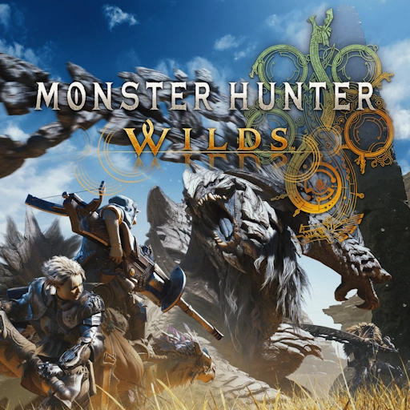

What is Wilds News?
Wilds News is a fanmade website dedicated to informing players, both new and old about the upcoming game, Monster Hunter Wilds. Here at Wilds News, we'll inform players, both new and old about the latest information about the game. We also have a dedicated page to giving a basic rundown of each of the fourteen weapon classes.
What If I'm New?
If you're a new player interested in Monster Hunter Wilds, it can be daunting. Wilds is the sixth mainline installment in the series, so where should you start? Luckily, Monster Hunter games don't have a linear story! You could, and probably should, play Monster Hunter World first in order to get your bearings. Does that mean you should just ignore them, though? Absolutely not! Every Monster Hunter game has added onto the franchise in some unique form or another, even if some elements didn't stick. The games we suggest here at Wilds News are as follows: Monster Hunter Generations Ultimate a fourth generation game, which is on the Nintendo Switch, Monster Hunter World and Monster Hunter Rise, the fifth generation games, available on PC and Console, and Monster Hunter Frontier, an old MMO relegated to private servers on the PC. Head on over to the Weapons page and learn about your future main weapon!
I'm Already a Monster Hunter Fan!
Great! Head on over to our News page and find the latest information on Monster Hunter Wilds!